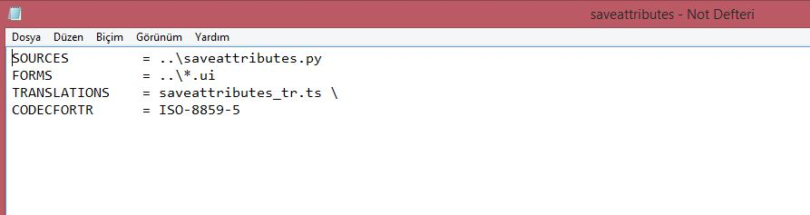
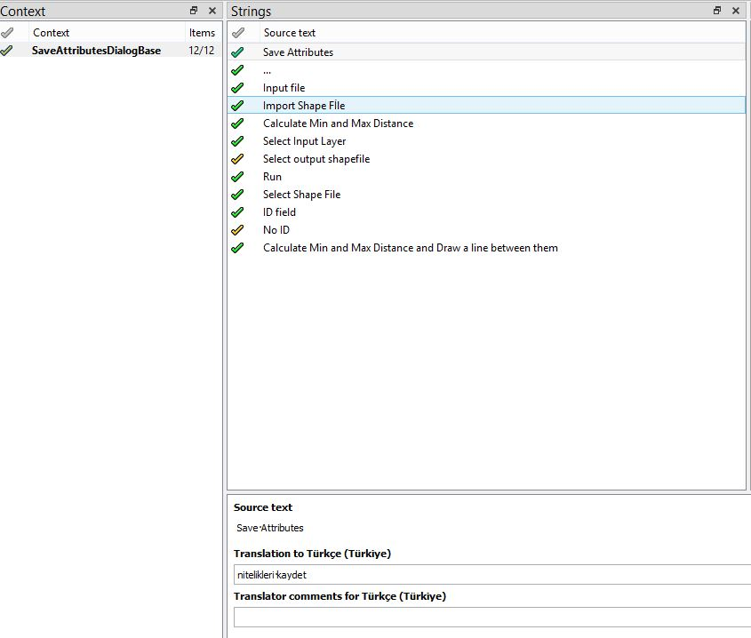
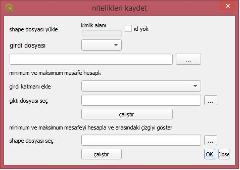
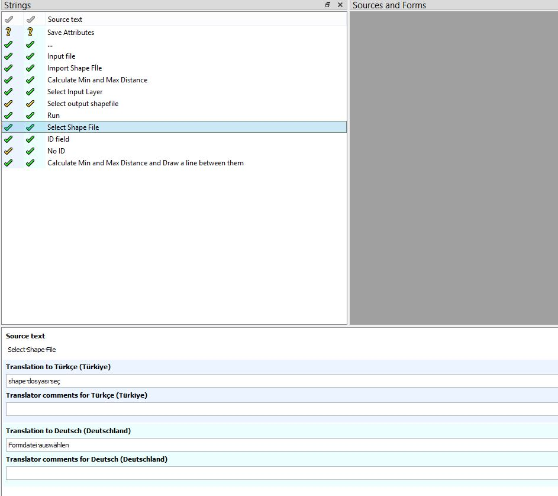
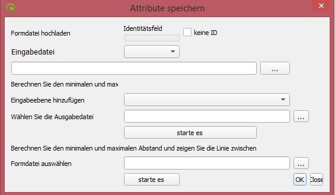

Internationalization of QGIS Plugins¶
Our GitHub link : https://github.com/okademirbilek/GMT-456-GIS-Programming
-First we need to install Qt and Qt Linguist
Qt : https://www.qt.io/download
Qt Linguist : https://github.com/lelegard/qtlinguist-installers/releases
2-Create the saveattributes.pro file under i18nfolder of the plugin
3-The command lupdatesaveattributes.procreates the relevant .ts files. (under Qt command window)
4-Open Qt Linguist to process the .ts files and start translating
5-Finally, run the command lrelease saveattributes.proto obtain the .qm files that are used in QGIS.
6-English to Turkish
7-English to German
 